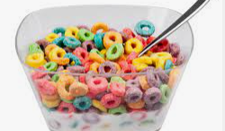

<a href="../index.html">Home</a>

<h1>Cereal</h1>

<p>Made up of milk and chosen cereal</p>

<h2>Ingredients</h2>
<ul>
    <li>Cereal</li>
    <li>Milk</li>
</ul>
<h2>Steps</h2>
<ol>
    <li>Add cereal</li>
    <li>Pour over milk</li>
    <li>Add sugar to taste</li>
</ol>